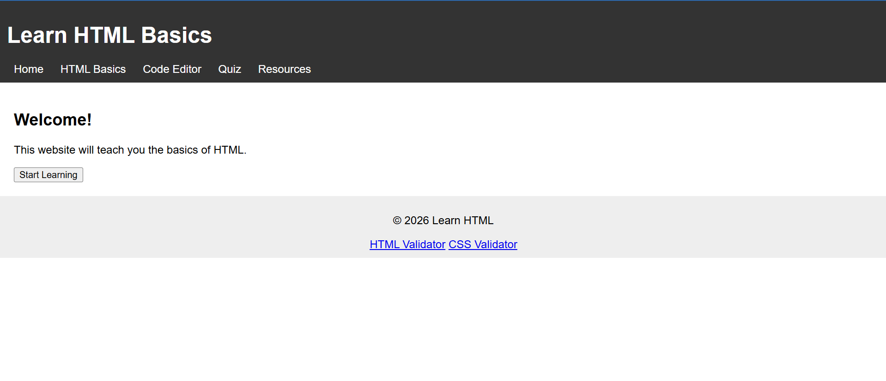

Evaluation: Kowae, Marc

Review
- Submission: The project link leads to the correct destination.
- Design and Crap: The design is consistent through all five pages however the left alignment leaves the website left heavy.
The styles are supplied by an external stylesheet.
- Contrast: The site uses contrast well for easily readable words against the background but only uses one type of font.
- Repetition: The site uses consistent coloring thought all its pages. However the footer for the home page has two links that aren't present in any other pages.
- Alignment: As stated above all pages seem to favor the left side of the screen leaving the middle and right empty.
- Proximity: Related elements are usually stacked on top of each other leading to good proximity.
- Files and structure: The structure of the website pages appears to be within the itis3135 folder and not in its own. All names are lowercase however the index has project in front of it and doesn't align with proper naming conventions.
- Page structure: Every page includes a header with a nav, however instead of the main only including the site name it includes the webpage name. A main is present but only the home page and resources page have a defining h2 title for the site. None of the pages include a brand tagline. Lastly a footer is present with no personal links but as stated above the home page has different / unique links.
- Overall Notes: Overall i would first suggest putting all of the project files in a separate folder in side or outside the itis3135 folder. Next i would suggest centering the elements in the main for each or your pages to give a centered feeling. Try and find more font options as well as colors to really make the site stand out, make sure they contrast too. Try using a display option that sticks the footer to the bottom of the page to eliminate the large white area below the footer. Lastly add the validation "small green cloud" script to your pages for more validation.